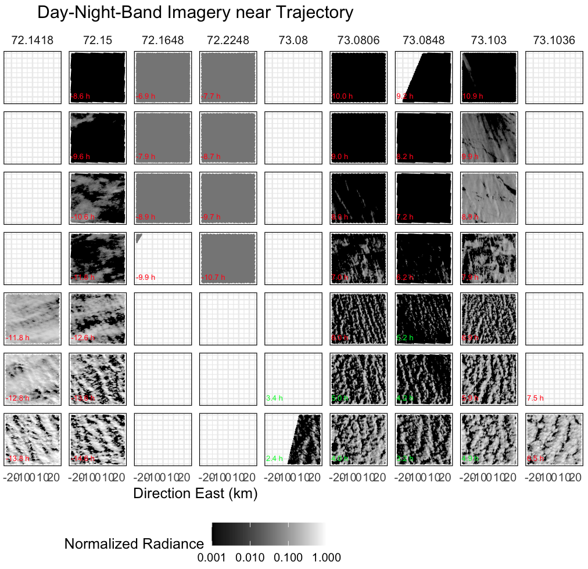
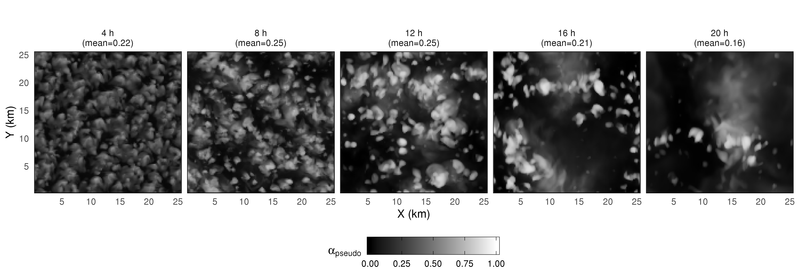
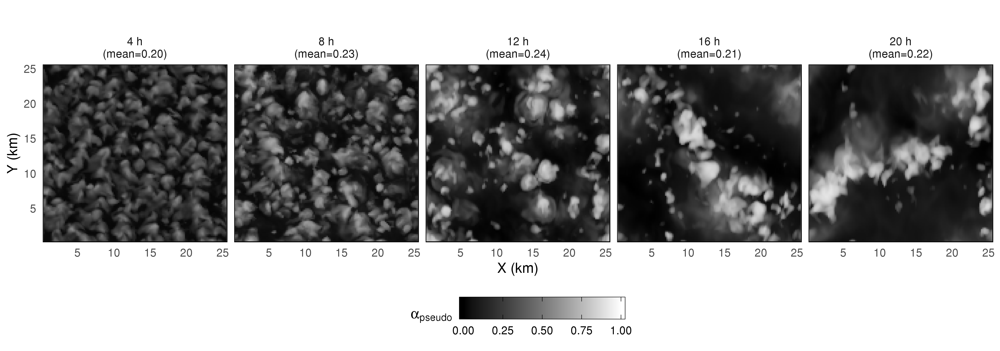
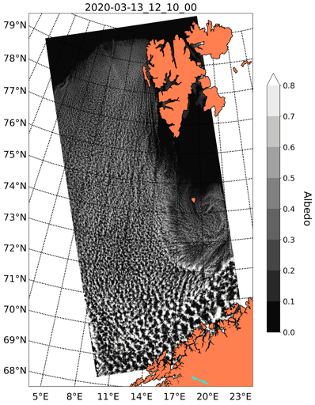
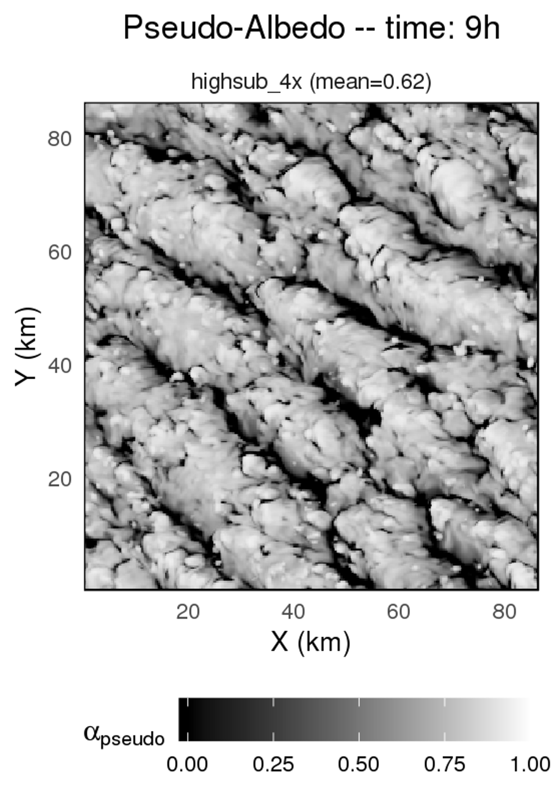
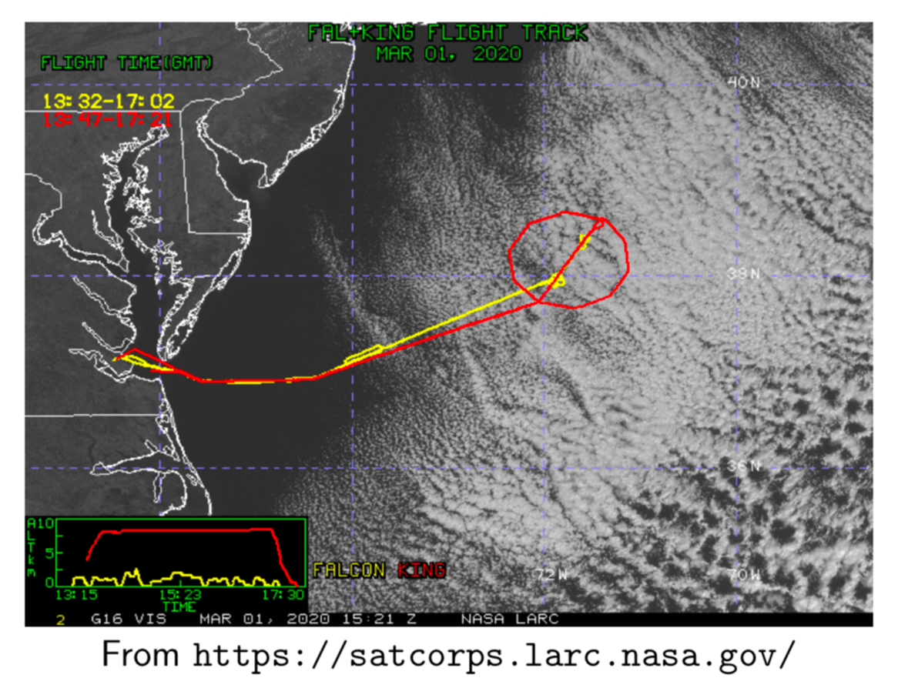
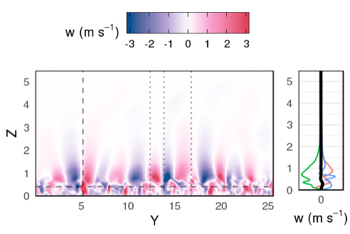

Where are the rolls?#
A prominent feature of most cold-air outbreaks observed during COMBLE via visible satellite imagery, including on 13 March, is the occurrence of prominent cloud streets assocated with boundary layer rolls issuing from the marginal ice zone. However, these have proven to be elusive in LES. Below we discuss this problem, which was also encountered in setup of the CONSTRAIN model intercomparison by de Roode et al. (2019), who concluded that “the reason that no cloud streets are present in the simulations is not fully understood by the authors.”
Properties of observed cloud streets#
Satellite imagery from 13 March indicates that marine boundary layer (MBL) rolls are likely present in the clear air prior to cloud formation, and they are variable in space and time. Alignment appears primarily NNW-SSE with a less common secondary mode aligned NNE-SSW. According to the classification suggested by Young et al. (2002), these exhibit a “band of froth” appearance associated with an aspect ratio (AR) of roll wavelength on BL depth (z_i) > 1 and multiple updrafts spanning each cloud street. At two hours from the ice edge (third row from bottom in Fig. 1), the BL height is approximately 1 km (per CALIPSO) and the roll wavelength is approximately 5 km, leading to an AR of 5 in line with marine CAOs reported by Young et al. (their Fig. 4); in the following two hours the AR is similarly increasing faster than simulated BL depth (cf. their Fig. 4 with BL depth increasing).

Figure 1. VIIRS day-night-band satellite imagery over the Norwegian Sea region on 12 and 13 March 2020 in 50 km x 50 km domains: columns indicate day of year at each NOAA-20 or SNPP satellite overpass and rows indicate hours from the simulation trajectory start time, from 0 h at top (over sea ice) to 6 h at bottom (4 hours from ice edge). Numbers on each panel indicate the temporal distance in hours from our trajectory location (green numbers indicate closest images).
Absence of cloud streets in 100-m LES simulations#
Simulations on a 25x25-km domain might be expected to contain roughly 5 cloud streets at 4 h (two hours from ice edge; comparable to third row from the bottom in Fig. 1). We see slight evidence of rolls at 4 h in Fig. 2 (top row), but they are oriented NNE-SSW rather than NNW-SSE and are far less developed than in the satellite observations. Negligible improvement was found for sensitivity tests with horizontal winds nudged to ERA5 profiles (Fig. 2, bottom row) or other setup changes as follows (not shown): a sharper and lower inversion over sea ice (positing that ERA5 may contain high biases of inversion height over sea ice), changes to sea surface temperature evolution downwind of the ice edge (a weaker gradient), increase in horizontal resolution (to 25 m), increase in domain size (to 50x50 km), initialization of an idealized Ekman spiral in the initial condition (obtained from a 1D model, again positing biases in ERA5), or changes to the surface roughness specification.
 
Figure 2. Pseudo-albedo calculated from dx=100m DHARMA LES simulations begun 2 hours upwind of the ice edge and forced with geostrophic winds (top row) exhibit slightly more indication of cloud streets at 4 h (two hours downwind of ice edge) than simulations forced with nudged winds (bottom row).
Weak cloud streets in realistic WRF simulations#
Simulations using WRF with a nested internal domain exhibit stronger cloud streets than LES with periodic boundary conditions, but they remain weaker than observed (Fig. 3).

Figure 3. Pseudo-albedo calculated from dx=150m WRF LES simulations also exhibit notably weaker cloud streets than observed.
Emergence of strong streets in DHARMA LES of a Northwest Atlantic CAO#
Quasi-Lagrangian DHARMA LES results for a case study within the NASA ACTIVATE observation domain readily reproduced MBL rolls without any special attention to setup details (Fig. 4). However, the rolls in this case are not present when clouds first appear off-shore (Fig. 5), suggesting a different formation process.

Figure 4. Pseudo-albedo calculated from DHARMA LES simulations of CAO conditions over the Northwest Atlantic.

Figure 5. Observed cloud streets during ACTIVATE are not present when clouds initially form, in contrast to conditions observed during COMBLE.
Discussion and community input welcomed#
Under conditions of large stability parameter (-z_i/L > 10), where L is the Monin-Obukhov length, Gryschka et al. (2008) used LES to show that roll formation requires triggering by sea ice temperature heterogeneities. They referred to such rolls as forced, in contrast to self-organizing rolls that occur when surface fluxes are weaker. At 2 h, the 13 March case exhibits z_i of roughly 1000 m and L of roughly –80 m, consistent with stability parameter > 10, placing this case into the forced category. In follow-on work, Gryschka et al. (2014) compare simulations with and without roll-generating sea ice heterogeneity, and conclude that total surface fluxes do not significantly differ because the rolls assume part of the transport that is otherwise turbulent rather than organized. They therefore suggest that forced roll convection is not necessary to include in weather and climate model parameterization schemes.
Nonetheless, in this case, at least one group had difficulty sustaining rolls even when ice edge heterogeneity was included (Mikhail Ovchinnikov, personal communication). Gryschka et al. (2008) mention that along-roll wind shear or shear curvature below 0.2z_i may also lead to forced rolls in the absence of upwind surface heterogeneity. Young et al. (2002) further conclude that candidate processes contributing to the range of observed atmospheric roll behaviors include surface buoyancy flux, latent heat release, roughness-induced shear, and baroclinically induced shear—as well as tropospheric gravity waves that may undergo three different trapping mechanisms and whose effects may depend on the angle between the shear vector within the boundary layer versus above. While DHARMA simulations do exhibit strong gravity waves under both ACTIVATE conditions and in the 13 May case (Fig. 6), observations of ice edge and thermodynamic and wind profile conditions are lacking to confirm apparent shortfalls in the case specification. Finally, mechanisms associated with ice edge heterogeneity could be difficult or impossible to represent in Lagrangian LES with fully periodic boundary conditions.

Figure 6. Vertical wind cross-section in a DHARMA LES simulation of the 13 March case reveals vertical motions overlying the MBL that reach several kilometers into the overlying stable free troposphere.
We welcome further discussion, as well as submission of sensitivity test results that explore potential tweaks to the current COMBLE-MIP specification in order to better represent the observed cloud streets.
Source: Ann Fridlind (ann.fridlind@nasa.gov), Florian Tornow (ft2544@columbia.edu), and Tim Juliano (tjuliano@ucar.edu)